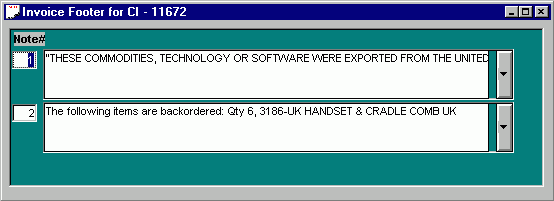

The Footer window is pretty straight forward. Notes pertaining to the shipment, such as necessary statements for Customs (The Destination Control Statement, et al) or internal notes to Aspect such as backorder information can be entered into the Footer fields either manually or with the drop-down menus.
The essential thing to understand about the Footer is that there must be a minimum of two fields entered for each invoice. The reason for this is that the last field will ALWAYS print on its own page. In other words, if a one page commercial invoice is being created and the first field of the Footer is the Destination Control Statement then an additional field must be created in the footer to enable the Destination Control Statement to print on the same page as the Header and Detail sections of the Invoice.
The reason for this is that there are many instances where it is necessary to "attach" notes regarding the shipment without having them print on the main body of the invoice. These notes would explain details of the shipment, such as backorders or structure changes, that are of interest to Aspect only and are of no value to individuals handling the invoice outside of Aspect. These internal notes would be electronically attached to the invoice as a phantom last page. If the invoice is e-mailed to Aspect personnel that require details for international shipments, they would receive these intenal notes but the actual paperwork that travels with the shipment would not contain them.
The way the template in Word works, if a one page invoice is printed out, the top of the invoice will indicate Page 1 of 1 and if the phantom page with the internal notes is printed the top of the page will indicate Page 2 of 1 (a two page invoice will print out Page 1 of 2, Page 2 of 2 and Page 3 of 2 and so on). If there are no internal notes necessary for a particular shipment there still must be a final field in the Footer for the phantom page. This field can contain the phrase "NO NOTES" (see top of page) or something similar, but it must contain something or a note intended to print on the invoice will end up on the phantom page instead. If a note field is required in addition to the default two then the new field can be added by clicking on the Add Field button .
During a normal working day the invoice elements (Header, Detail & Footer) may be opened and closed many times to be reviewed or changed prior to printing. Use the Open button or FILE|OPEN to bring up previously saved invoice elements. The Header will appear first and the additional elements can be opened by clicking their respective buttons: for detail and for the Footer.
After the Header, Detail and Footer windows have been completed, the data can then be sent to the Microsoft Word template for final output.
Go To PRINT